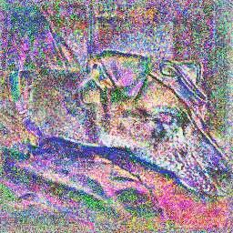

I am a first-year PhD student at Columbia University advised by Carl Vondrick. I am interested in building machines that leverage multimodal signals (e.g. vision, vibration, audio) and natural transformations in the physical world to creatively perceive and interact with their environment. My research is supported by the Columbia Center of Artifical Intelligence & Technology (CAIT) & Amazon Science Ph.D. Fellowship.
I previously graduated from the University of Pennsylvania advised by Jianbo Shi, with a BA in Computer Science, and minors in Math, Computational Neuroscience, and Systems Eng. In my free time I play with art projects, make useless but beautiful datasets (see Reflections, Water), read, play piano, and sometimes, scuba dive.
Research
-
The Boombox: Visual Reconstruction from Acoustic Vibrations Boyuan Chen, Mia Chiquier, Hod Lipson, Carl Vondrick
PaperProject Page
-

Adversarial Attacks are Reversible with Natural Supervision Chengzhi Mao, Mia Chiquier, Hao Wang, Junfeng Yang, Carl Vondrick
Paper
Teaching
Courses
Advanced Computer
Vision (COMS 4731, Summer 2021)
Head Teaching AssistantColumbia University
Head Teaching AssistantColumbia University
Dynamical Systems (ESE210, Fall 2019)
Head Teaching AssistantUniversity of Pennsylvania
Head Teaching AssistantUniversity of Pennsylvania